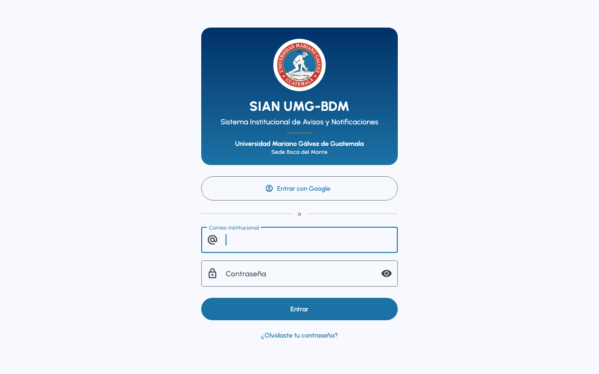
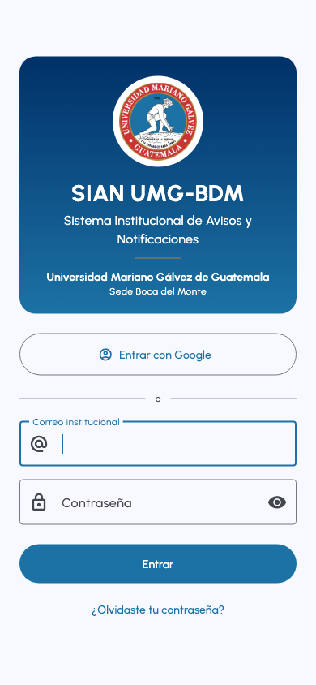
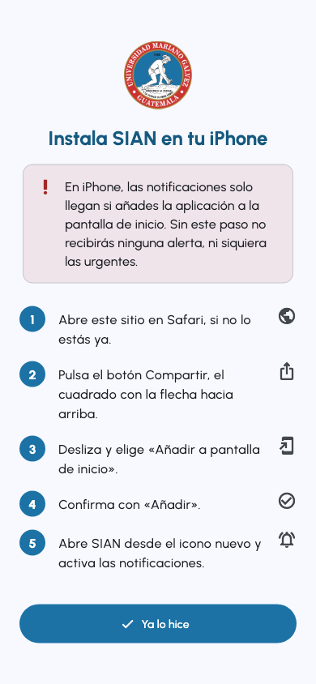
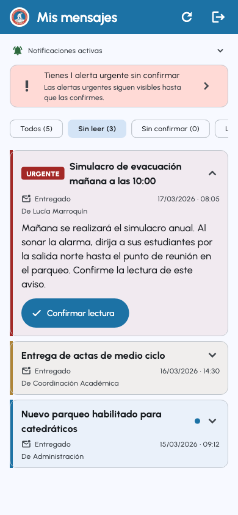
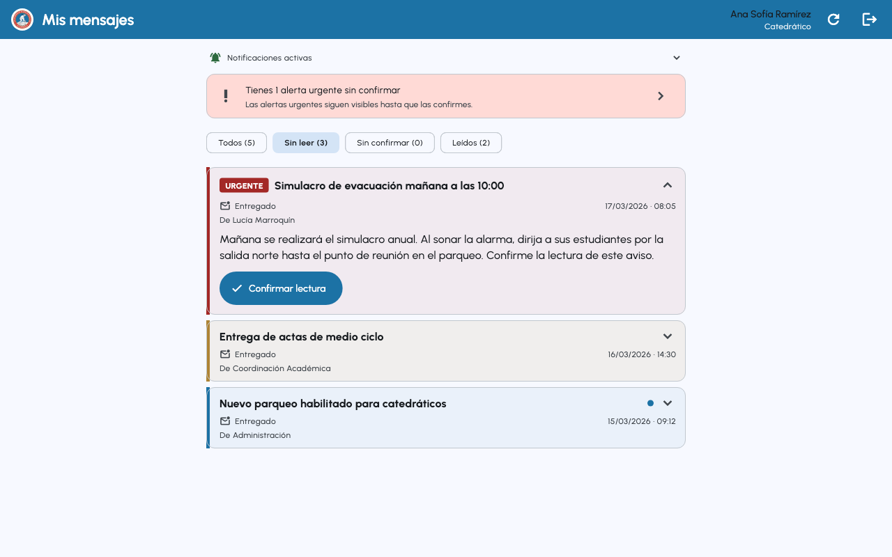
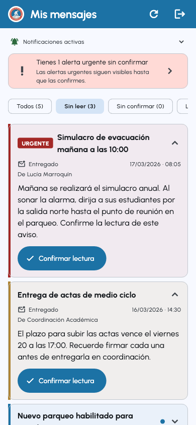

Empiece aquí
Tres pasos. Diez minutos la primera vez, y ya no se vuelve a hacer.
- Entre a SIAN. Abra
sian-umg-bdm-dev.web.appy use Entrar con Google con su correo de la universidad. Ver cómo entrar - Instale la aplicación en su celular. En iPhone es obligatorio: sin ese paso no le llega ninguna alerta. iPhone · Android
- Active las notificaciones. Acepte el permiso que le pide el celular. Le llegará un aviso de prueba. Ver cómo
Qué es SIAN
Sistema Institucional de Avisos y Notificaciones.
SIAN existe para que un aviso de la coordinación académica le llegue a su celular aunque no tenga la aplicación abierta. Un correo se lee cuando uno decide revisarlo; una alerta de evacuación tiene que sonar en el momento.
No se descarga de ninguna tienda. Se abre desde el navegador, en esta dirección:
https://sian-umg-bdm-dev.web.app
Los dos tipos de aviso
| Tipo | Cómo se ve | Qué significa |
|---|---|---|
| Informativo | Sin marca especial | Información que conviene conocer. Llega como cualquier notificación. |
| Urgente | Etiqueta roja URGENTE | Requiere atención inmediata. Suena distinto, vibra más y el mensaje se abre solo en la bandeja. |
Algunos avisos, además, le piden que confirme que los leyó. Eso deja constancia de quién estaba enterado, que es lo que después permite responder a la pregunta «¿quién sabía del simulacro?».
Cómo entrar
Igual en el celular y en la computadora.
Abra sian-umg-bdm-dev.web.app
y verá la pantalla de inicio de sesión. Hay dos formas de entrar.


Opción 1 · Entrar con Google (recomendada)
- Presione Entrar con Google.
- Elija su cuenta institucional en la lista que aparece.
- Listo. No tiene que inventar ni recordar otra contraseña.
Opción 2 · Correo y contraseña
- Escriba su correo institucional y su contraseña.
- Presione Entrar.
Si todavía no tiene contraseña, use ¿No tienes cuenta? Regístrate y créela. La contraseña necesita al menos 10 caracteres, con mayúscula, minúscula y un número.
Si olvidó su contraseña
Presione ¿Olvidaste tu contraseña? y escriba su correo. Recibirá un enlace para restablecerla.
Si el sistema no lo deja entrar
| Lo que dice | Qué hacer |
|---|---|
| Acceso no autorizado | Su correo no está en la lista. Pida a la coordinación académica que lo registre. |
| Cuenta desactivada | Su cuenta existe pero fue desactivada. Su historial se conserva completo; contacte a la coordinación para reactivarla. |
| Sesión sin rol asignado | Cierre sesión y vuelva a entrar. El rol se asigna aparte, y su sesión pudo haberse creado antes de que se lo asignaran. |
Instalar en iPhone y iPad
- Abra
sian-umg-bdm-dev.web.appen Safari. Chrome y Firefox en iPhone no pueden hacer esto. - Presione el botón Compartir: el cuadrado con una flecha hacia arriba, abajo en el centro de la pantalla.
- Deslice hacia abajo en el menú y elija Añadir a pantalla de inicio.
- Presione Añadir, arriba a la derecha.
- Cierre Safari y abra SIAN desde el ícono nuevo de su pantalla de inicio. De ahí en adelante, entre siempre por ese ícono.
La aplicación muestra estos pasos
Si entra desde un iPhone sin haberla instalado, SIAN le muestra estos mismos pasos antes que nada:

Versión de iOS
Las notificaciones necesitan iOS 16.4 o superior. Puede revisarla en Ajustes → General → Información → Versión del software. Con una versión anterior podrá leer los mensajes dentro de la aplicación, pero el celular no le avisará.
Instalar en Android
- Abra
sian-umg-bdm-dev.web.appen Chrome. - Chrome mostrará abajo un aviso de Instalar aplicación.
Presiónelo.
Si no aparece: menú ⋮ (arriba a la derecha) → Añadir a pantalla principal o Instalar aplicación. - Confirme con Instalar.
- El ícono queda en su pantalla de inicio, junto a las demás aplicaciones.
Instalada, SIAN abre a pantalla completa y sin barra de direcciones, y las notificaciones se comportan igual que las de cualquier otra aplicación.
Instalar en computadora
En computadora tampoco es obligatorio: SIAN funciona en una pestaña normal, notificaciones incluidas. Instalarla evita tener que buscar la pestaña entre otras veinte.
- Abra
sian-umg-bdm-dev.web.appen Chrome o Edge. - En la barra de direcciones, a la derecha, aparece un ícono de
instalar (una pantalla con una flecha hacia abajo).
Presiónelo.
También desde el menú ⋮ → Enviar, guardar y compartir → Instalar página como aplicación. - Confirme con Instalar. Se abre en su propia ventana.
Activar las notificaciones
Sin este permiso, su celular no le avisará de nada.
La primera vez que entra, arriba de sus mensajes aparece una tarjeta Activa las notificaciones. Presiónela y acepte el permiso que pide el navegador. Le llegará una notificación de prueba: si llega, todo está bien.
Qué hacer según lo que diga
| Mensaje | Significado y solución |
|---|---|
| Notificaciones activas | Todo correcto. No hay nada que hacer. |
| Activa las notificaciones | Todavía no ha dado el permiso. Presione el botón y acéptelo. |
| Notificaciones bloqueadas | El permiso fue denegado. La misma tarjeta le indica dónde cambiarlo en su navegador; después recargue la página. |
| Ábrela desde la pantalla de inicio | Está en una pestaña de Safari en iPhone. Vaya a Instalar en iPhone. |
El número sobre el icono
Cuando tiene mensajes sin leer, sobre el icono de SIAN aparece un número pequeño. Le dice cuántos le faltan por abrir, sin necesidad de entrar. Al leerlos todos, el número desaparece solo.
| Dónde lo ve | Qué hace falta |
|---|---|
| iPhone y iPad | Tener la aplicación en la pantalla de inicio. En una pestaña de Safari no sale. |
| Android | Tener la aplicación instalada. El número aparece sobre el icono, igual que en WhatsApp. |
| Computadora | Tener la aplicación instalada en Chrome o Edge. El número sale sobre el icono de la barra de tareas. |
Su bandeja
Lo que ve al entrar, y cómo leerlo.
Al entrar verá sus mensajes, del más reciente al más antiguo. Cada uno se muestra plegado, con cuatro datos: título, estado, fecha y quién lo envió. Toque cualquiera para desplegarlo y leerlo completo.

El estado de cada mensaje
| Dice | Significa |
|---|---|
| Entregado | Le llegó y usted todavía no lo ha abierto. |
| Abierto | Usted ya lo abrió. Queda registrado con la hora. |
| Confirmado | Usted declaró haberlo leído. Es el final del recorrido. |

Las pestañas
Cuatro filtros, y cada mensaje está en uno solo.
La bandeja abre en Sin leer, que es la pregunta con la que uno entra: qué hay de nuevo. Las otras están a un toque, y cada una lleva su número.
| Pestaña | Qué muestra |
|---|---|
| Sin leer | Llegó y usted todavía no lo ha abierto. Es la pestaña de entrada. |
| Sin confirmar | Ya lo abrió, pedía confirmación y aún no la ha dado. |
| Leídos | Ya no hay nada que hacer con él: lo abrió y no pedía confirmación, o ya lo confirmó. |
| Todos | El historial completo. |
Sin leer → al abrirlo, si pedía confirmación pasa a Sin confirmar; si no la pedía, pasa directo a Leídos → al confirmarlo, Leídos.
Los tres números suman el total de sus mensajes.
Qué significa cada color
Qué le falta por atender, sin abrir nada.
A la izquierda de cada mensaje hay una franja de color. Cada mensaje lleva un solo color: el más importante que le corresponda.
| Color | Qué significa | Qué hacer |
|---|---|---|
| Rojo | Urgente y todavía sin confirmar. | Es lo primero que debe atender. |
| Dorado | Espera su confirmación. | Ábralo y confirme cuando lo haya leído. |
| Azul | Sin leer. Solo informa. | Léalo cuando pueda. |
| Sin color | Ya leído o ya confirmado. | Nada pendiente. |
Junto al título de los mensajes sin leer aparece además un punto azul, igual que en el correo.
Confirmar lectura
Qué registra el sistema cuando usted abre y cuando confirma.
Confirmar es su declaración de que lo leyó, y tiene valor probatorio: queda registrado con su nombre, la fecha, la hora y el dispositivo.
Por eso confirmar no pasa solo: usted tiene que presionar el botón. Cuando un aviso lo exige, al desplegarlo aparece Confirmar lectura. Presiónelo cuando de verdad ya lo haya leído.

Notas de voz e imágenes
Hasta dos notas de voz y tres imágenes por aviso.
Un mensaje puede traer adjuntos, y aparecen en el mismo orden en que los puso quien lo envió. Ese orden suele significar algo: un plano, después la nota de voz que lo explica, después la foto del punto de reunión.
- Notas de voz: aparecen bajo el texto con su reproductor. Presione reproducir.
- Imágenes: se muestran como un botón Toque para ver la imagen. Se descargan solo cuando usted las pide, para que la bandeja abra rápido cuando la conexión está mala. Ya cargada, tóquela para verla a pantalla completa y agrandarla.
Buscar
Para cuando sabe que lo recibió pero no cuándo.
El buscador de arriba filtra por palabras del título y del mensaje. Puede escribir varias en cualquier orden, y no necesita poner tildes.
La bandeja muestra los mensajes de quince en quince. Al final de la lista hay un botón para ver más, con el número de los que quedan.
Palabras que aparecen en este manual
Por si alguna no le resulta familiar.
| Palabra | Qué quiere decir |
|---|---|
| Navegador | El programa con el que se entra a internet: Chrome, Safari, Edge, Firefox. |
| Pestaña | Cada página abierta dentro del navegador. Cuando SIAN está instalada, ya no vive en una pestaña sino en su propio ícono. |
| Instalar la aplicación | Agregar SIAN a la pantalla de inicio del celular, para abrirla con un ícono como cualquier otra aplicación. No pasa por App Store ni por Play Store, y no ocupa casi espacio. |
| Notificación | El aviso que aparece en la pantalla del celular aunque SIAN esté cerrada. |
| Permiso de notificaciones | La autorización que el celular le pide una sola vez para poder mostrarle esos avisos. Sin ella, SIAN no puede avisarle de nada. |
| Bandeja | La lista de los mensajes que usted ha recibido. |
| Confirmar lectura | Presionar el botón con el que usted declara que ya leyó un aviso. Queda registrado con su nombre y la hora. |
| Recargar | Volver a cargar la aplicación desde cero. Es el botón del círculo con la flecha, arriba a la derecha. |
Si algo no funciona
No me llegan las notificaciones
- ¿Usa iPhone? Revise que haya abierto SIAN desde el ícono de la pantalla de inicio y no desde una pestaña de Safari. Es la causa más frecuente con diferencia.
- Vea la tarjeta de arriba de sus mensajes y haga lo que diga (tabla de mensajes).
- Revise que el celular no esté en silencio o en No molestar.
- Presione el botón recargar de la barra de arriba.
Abrí un mensaje y desapareció de la lista
No desapareció: cambió de pestaña. Al abrirlo deja de estar «sin leer» y pasa a Sin confirmar o a Leídos, según pidiera confirmación o no. Mientras lo está leyendo se queda a la vista; se mueve cuando usted cambia de pestaña.
La pantalla se quedó pegada o veo algo raro
Use el botón recargar (el círculo con la flecha), a la izquierda del de cerrar sesión. Recarga la aplicación por completo y de paso trae la versión más reciente, que en una aplicación instalada puede llevar días sin renovarse.
No encuentro un mensaje que sé que recibí
Cambie a la pestaña Todos y use el buscador. Si aun así no aparece, avísele a la coordinación: puede que la entrega haya fallado en su dispositivo.
El correo de recuperación no llega
Revise la carpeta de correo no deseado. Hoy se envía desde un dominio de Google y algunos servidores lo clasifican ahí.